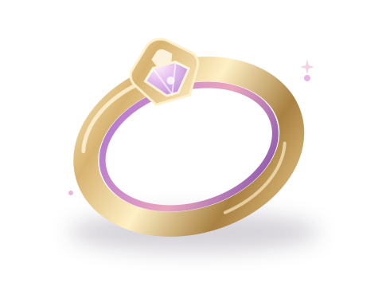

Meet the next idea in personal safety: a discreet smart ring concept, designed to turn one small gesture into a stronger circle of support.
✓ A website prototype — no ring or emergency service is connected

⌁One touchstarts a safety flow
⌁Designed for resilienceCellular · Satellite · Offline
A CONCEPT BUILT AROUND YOU
01simple gesture
03communication paths
∞more peace of mind
THE IDEA
Safety shouldn't depend on a signal.
In a busy city or on a quiet road, getting help should feel simple. SheShield explores a future where a discreet wearable and thoughtful technology work together to make that possible.
⌁01 / CONNECTED
Cellular first
A future ring could send a distress event through a compatible cellular network to a secure service.
✧02 / BEYOND COVERAGE
Satellite ready
A future version may use an authorised satellite service where compatible hardware and coverage allow.
◷03 / OFFLINE-CAPABLE
Save, then send
If a connection isn't available, a future device could hold an event securely and retry when connectivity returns.
A PROTOTYPE WITH A PURPOSE
See the whole safety flow.
Explore a hands-on demo of the dashboard, alerts, location permission, and trusted contacts.
WELCOME TO SHESHIELD
A little more peace of mind.
Your account uses Supabase Auth. No ring or emergency service is connected.
SERVER ACCOUNT · NO REAL ALERTS ARE SENT
Create your demo account
A few details to personalise your experience.
⌑ Supabase Auth manages your password; session tokens are kept in HttpOnly cookies.
YOUR SAFETY SPACE
Good day, there
A clear view of your SheShield demo, all in one place.
iPrototype mode: The ring, network delivery, and contact notifications are simulated. This dashboard does not contact emergency services.
DEVICE STATUS
Your SheShield ring
Not connected
Hardware not connected
You're exploring in demo mode
Battery 84% demoConnection None
COMMUNICATION
Demo network
● Available
Choose which route the demo uses for new alerts.
Simulated cellular route · no network transmission occurs.
NEED HELP?
Your safety comes first.
Press only to explore a simulated emergency alert flow.
No alert is sent to emergency services or contacts.
LOCATION
Your location
Not shared
⌖
Location not available
Choose to share your browser location.
No location
YOUR OVERVIEW
♡0Trusted contacts
◷0Demo alerts created
⌁Not connectedRing hardware
RECENT ACTIVITY
Latest demo alerts
SheShield is a concept prototype, not an emergency service. If you are in immediate danger, contact your local emergency number directly.
YOUR SUPPORT CIRCLE
Trusted contacts
Keep important people close. This prototype does not notify them.
0 contacts
iContact details are saved in Supabase for your account. No messages or calls are sent.
ADD TO YOUR CIRCLE
Someone you trust
Add up to 10 people you would want in your support circle.
YOUR PEOPLE
Safety circle
A RECORD OF YOUR DEMO
Alert history
See the simulated alert events saved to your Supabase account.
iThese are prototype records only. Alerts were not sent to contacts, emergency responders, or a real network.
Alert
Date & time
Location
Route
Status
◷
No alerts to show
Your demo alert history will appear here.
THE FUTURE OF PERSONAL SAFETY
Your SheShield device
A look at the smart ring concept behind the experience.
Demo only
CONCEPT RENDER · NOT A REAL DEVICE
SHESHIELD SMART RING
Small enough to wear. Designed to matter.
A future safety ring could pair an unobtrusive form with a discreet SOS gesture. The device shown here is a visual concept only; no physical ring is connected to this website.
CONNECTION Not connected
SIMULATED BATTERY84% demo value only
BUILT FOR A FUTURE INTEGRATION
From ring to response
A production implementation would need validated hardware, secure services, and explicit consent.
01
Wearable firmware
Detects a deliberate SOS gesture and prepares a signed event.
⌁
02
Connectivity layer
Routes over supported cellular, authorised satellite, or a safe local queue.
⌁
03
Secure backend API
Authenticates the device, validates, timestamps, and stores the event.
⌁
04
SheShield dashboard
Displays event status to an authenticated user and permitted contacts.
✓
Integration boundaryPOST /api/v1/device-events/sosFuture interface proposal · not implemented
!
Important: There is no hardware, cellular connection, satellite service, or backend connected to this prototype. Battery and device status are not measured.
THE CONCEPT
One gesture. A considered response.
A future system designed to make the journey from SOS to support more resilient.
01
◉
Smart safety ring
A wearable is paired securely to its owner.
↓
02
⌁
SOS button pressed
A deliberate gesture prepares a safety event.
↓
03
⌕
Check connectivity
The device looks for a supported route.
↓
⌁
CellularCompatible network
✧
SatelliteCompatible service
◷
OfflineStore and retry
↓
04
⌘
Secure cloud backend
Receives and validates demo events for the signed-in account.
↓
05
⌂
SheShield dashboard
Shows status to the authenticated user.
WHAT THIS DEMO DOES
Explore the experience
Simulates alert creation and delivery statuses.
Saves trusted contacts and demo alerts through the Supabase-backed API.
Requests your permission before using browser location.
Updates queued demo events through the backend when a demo route is selected.
WHAT A REAL SYSTEM NEEDS
From concept to connected
Tested, certified wearable hardware and firmware.
Secure backend, device identity, and encrypted transport.
Authorised cellular / satellite providers and coverage.
Privacy, consent, safety testing, and operational support.
♡
Safety note: SheShield is a hackathon concept and is not a replacement for emergency services. This website cannot dispatch help or notify anyone. In an emergency, contact your local emergency number directly.
!
DEMO ALERT ONLY
Start a simulated SOS?
This will save a demo event to your Supabase account. It will not contact emergency services or your trusted contacts.
⌖
Requesting browser location…
Your browser may ask you to allow location access.
SheShield demonstrates a possible wearable safety experience. No physical ring, emergency service, communications provider, or alert backend is connected. Use the site only as a demo.